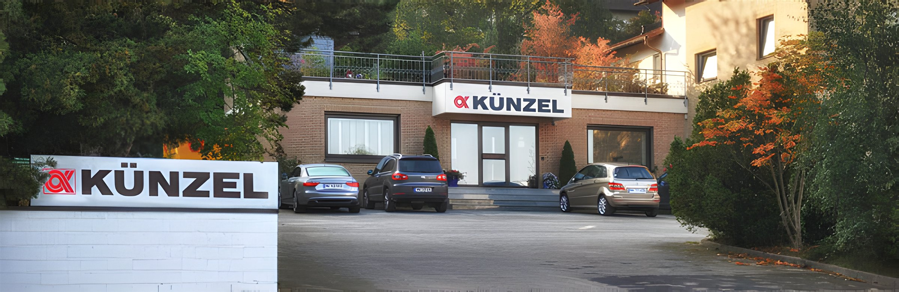
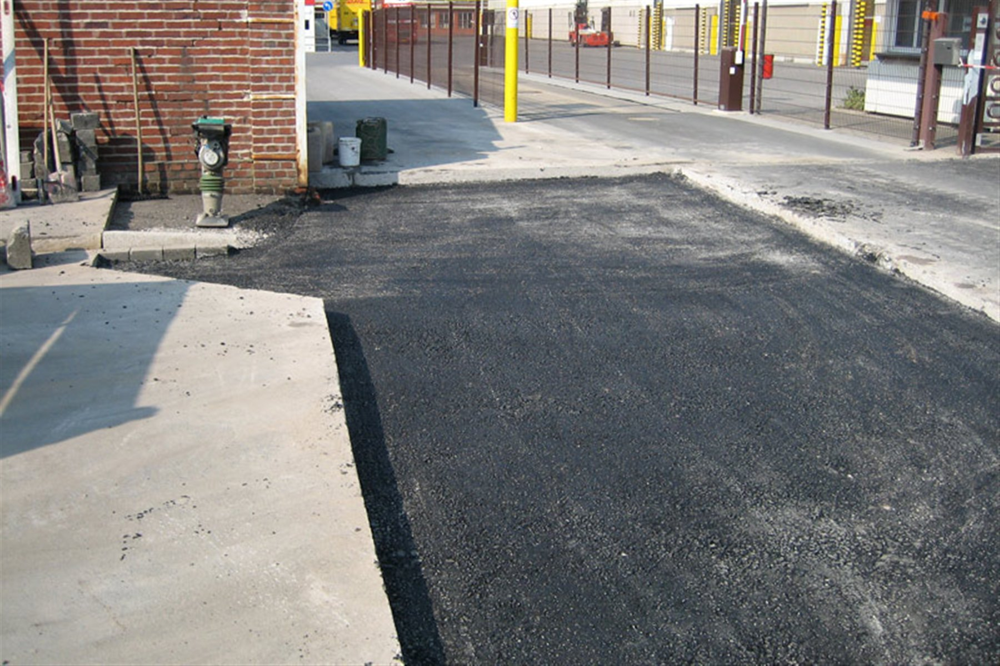

Kanalsanierung
Grabenlose Sanierung mit Robotertechnik, Kurzliner- und Inliner-Verfahren sowie Seitenzulaufeinbindung – von DN 100 bis DN 800, in offener und geschlossener Bauweise.
Mehr erfahren

Kanalsanierung, Hausanschlüsse und Tiefbau im Sauerland und Ruhrgebiet – grabenlos, zuverlässig und alles aus einer Hand. Seit über 60 Jahren in Menden.
Von der Kanalsanierung bis zum Straßenbau – wir übernehmen Ihr Projekt von der ersten Begehung bis zur Abnahme, mit eigenem Fachpersonal und moderner Technik.
Grabenlose Sanierung mit Robotertechnik, Kurzliner- und Inliner-Verfahren sowie Seitenzulaufeinbindung – von DN 100 bis DN 800, in offener und geschlossener Bauweise.
Mehr erfahrenGebrochene, verstopfte oder verschobene Abwasserrohre reparieren wir per TV-Inspektion, Fräsroboter und Kurzliner – schnell und ohne Zerstörung von Einfahrt oder Garten.
Mehr erfahren
Korrosion, Risse und undichte Schachtbauwerke sichern wir mit dem KS-ASS-Verfahren, Kunstharz-Injektionen gegen Grundwasser sowie Deckel- und Ringtausch.
Mehr erfahren
Kanalbau, Straßenbau, Pflaster- und Landschaftsarbeiten sowie Wasserbau – seit 1964 übernehmen wir Erd- und Tiefbauarbeiten für Kommunen, Industrie und private Bauherren.
Mehr erfahren

Alles aus einer Hand ist unser Grundsatz seit über 50 Jahren – saubere, technisch einwandfreie Arbeit mit moderner Technik, für schnelle und verlässliche Ergebnisse.
Der Erfolg unserer Arbeit hängt maßgeblich von unseren Mitarbeitenden ab. Deshalb setzen wir auf einen langjährigen Kernstamm, laufende Weiterbildung und Bauleiter, die vor Ort eigenständig entscheiden – im engen Austausch mit Auftraggebern und Bauleitung.
Gründung als Oeltjen & Künzel durch Hans-Joachim Künzel und Ernst Oeltjen.
Ernst Oeltjen scheidet aus. Hans-Joachim Künzel führt den Betrieb allein weiter.
Verstärkung durch Dipl.-Ing. B. Köck.
Gründung der Künzel Kanalsanierungs-GmbH in Lübben/Spreewald.
Dipl.-Ing. Christoph Künzel verstärkt das Unternehmen.
Umzug nach Menden, Zusammenschluss zur Künzel GmbH & Co. KG.
RAL-Gütezertifizierungen: S 15.16, S 30.01, S 15.1, S 21.3.
Neue Spezialfahrzeuge: Hochdruckspültechnik, „Lindauer Schere“.
Hans-Joachim Künzel übergibt nach 50 Jahren an Christoph Künzel & Bruno Köck.
Eine Auswahl unserer Kanalsanierungs- und Tiefbauprojekte im Sauerland, Ruhrgebiet und darüber hinaus.

Kanalerneuerung im TIP-Verfahren, Schachtsanierung und Renovierung mittels UV-Inlinern auf dem Kraftwerksgelände.

Sanierung von 34 Schachtbauwerken im gesamten Stadtgebiet.

Untersuchung und Sanierung von Anschluss- und Grundleitungen für 65 Häuser.
Korrosion, Risse und Wurzeleinwuchs beeinträchtigen die Funktion und gefährden das Grundwasser.
Formstabile Innensanierung ohne Aufgraben – wasserdicht, tragfähig und sofort einsatzbereit.
Seit 1964 in Menden verwurzelt – heute geführt von Christoph Künzel und Bruno Köck, der dem Unternehmen bereits seit 1977 verbunden ist.
Planung, Ausführung und Abnahme – ohne Nachunternehmer, mit einem festen Ansprechpartner.
Ein fester Kernstamm, laufend weitergebildet – statt wechselnder Subunternehmer.
TV-Robotik, Hochdruckspültechnik und die „Lindauer Schere“ für präzise, schnelle Sanierung.
Bauleiter entscheiden eigenständig vor Ort – für reibungslose Abläufe ohne Verzögerung.
RAL-Gütezeichen S 15.16, S 30.01, S 15.1 und S 21.3 sichern gleichbleibend hohe Standards. Details →
Bewährte Referenzen für Kommunen, Industrie und private Auftraggeber. Referenzen →
Ein klarer Prozess, damit Sie jederzeit wissen, woran Sie sind.
Wir sichten die Situation vor Ort und bewerten den Zustand von Kanal, Anschluss oder Schacht.
Transparentes Angebot mit Verfahren, Zeitplan und Kosten – abgestimmt auf Ihr Projekt.
Unser eigenes Team arbeitet mit moderner Technik – meist grabenlos, ohne Zerstörung.
TV-Inspektion, Abnahme und lückenlose Dokumentation – termingerecht übergeben.
Ob Kanalsanierung, Hausanschluss oder Tiefbauprojekt – wir melden uns kurzfristig mit einem ersten Vorschlag. Anfahrt, Impressum und Datenschutz finden Sie auf unserer Kontaktseite.
Vielen Dank – wir melden uns kurzfristig bei Ihnen zurück.